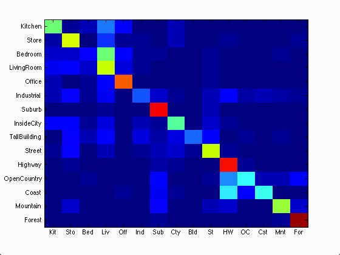
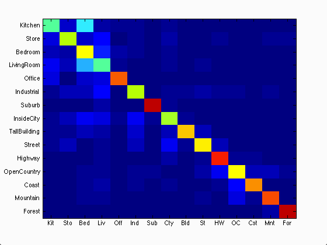

CS 143 / Project 2 / Scene Recognition with Bag of Words
Goal
The goal of this project is to examine the task of scene recognition with different methods with various complexity.
This is done in two steps:
- Feature computation: How to represent an image as a vector
- We start with the tiny image representation, which basically resizes the image to a given size, and then reshape it into a vector
- A more complex representation is Bag of SIFT, which first finds the SIFT descriptors of 16x16 patches computed over a grid of equal spacing, quantize them into a certain discrete types(vocab_size types), and count the frequency of those types appearing in the image
- Scene classification: Given the set of training features and training labels, how to find a map from any vector to a scene label
- We experimented with K-Nearest Neighbor classification, which find the K training images that are nearest to a given test image, and return the scene label that is dominant among them
- We also implemented the Support Vector Machine classifier which tries to find the line separating images in a category from images not in that category
Results
(Click on image to see more details)- Tiny image + K Nearest Neighbor

Accuracy (mean of diagonal of confusion matrix) is 0.221
- Bag of SIFT + K Nearest Neighbor

Accuracy (mean of diagonal of confusion matrix) is 0.531
- Bag of SIFT + linear SVM

Accuracy (mean of diagonal of confusion matrix) is 0.666
Effect of vocabulary size
One free parameter in the Bag of SIFT model is the size of the vocabulary, or the number of clusters that we'll store. Reducing the vocabulary size means that we're compressing the feature vectors by reducing their dimension, increasing the vocabulary size makes the visual words more fine-grained. We investigated how the performance varies with different vocabulary sizes, their correlation is shown in the graph below:
We can see that the performance vastly improves with vocabulary size going from 20 to 200 but improves more slowly for larger vocabuary sizes. This is because as more clusters are introduced, the chance for noise and the number of dimension in the feature vector also increases.
Soft assignment
One disadvantage of vector quantization is that two features assigned to two different (even very close) clusters are considered totally different. To remedy this problem, we experimented with "soft assignment": each feature is is assgined with a given weight to several visual words nearby in the feature space. The weight assigned is proportional to the exponential of the negative distance from the feature to the visual word.
[indices, distances] = knnsearch(vocab, features', 'K', 3);
N_features = size(features,2);
weights = exp(-0.5*(distances.^2)./variance);
for u=1:N_features
for v=1:K
image_feats(ii, indices(u,v)) = weights(u,v) + image_feats(ii, indices(u,v));
end
end
Unfortunately, we did not see any substantial performance gain from this.